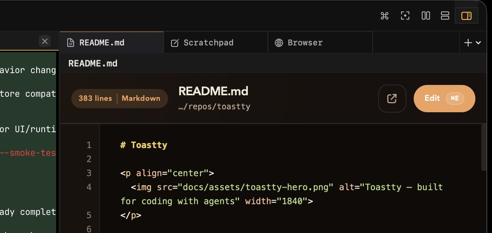
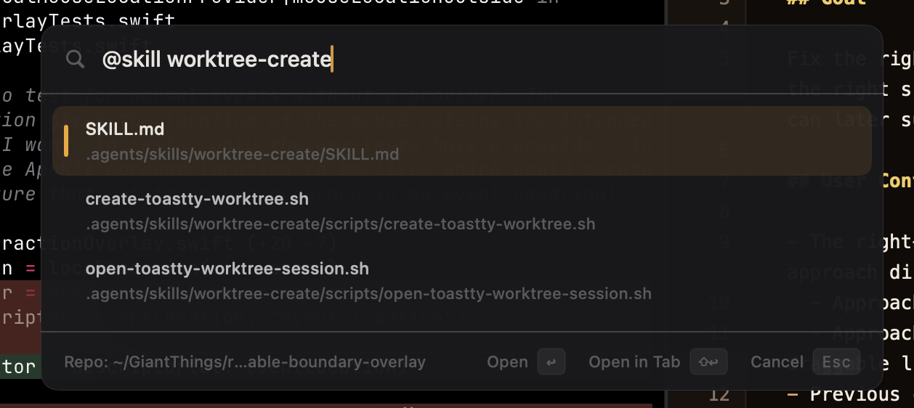

Live sidebar status
Claude, Codex, and Pi sessions can report readiness, working state, errors, and unread output.
A flexible, customizable and automatable home for your agents.
Live agent status, workspaces, rich keyboard shortcuts, and a growing list of extensions.
macOS 14.0+ required


Workspaces become an agent dashboard. Toastty surfaces ready, working, unread, and later-marked sessions without making you leave the terminal.
Claude, Codex, and Pi sessions can report readiness, working state, errors, and unread output.
Use ⌘⇧A to rotate through unread, approval, ready, and active sessions.
Focus on one panel at a time when you want to stay in the flow.
The right panel gives every workspace tab a place for Scratchpad notes, browser pages, and local documents while the main terminal layout stays focused on running work.


Do everything you can do in the app with keyboard shortcuts and the command palette. Quickly search for and open local files from the command palette too.
Toastty stays close to the terminal while adding just enough app structure around it.
Split horizontal, vertical, resize with arrows, equalize, zoom one to full view. Layouts persist across restarts.
Toastty is fully scriptable over JSON-RPC. Wire up custom skills that create workspaces, open Markdown files, or kick off a new Scratchpad for you.
.agents/skills/release/SKILL.md
name: release
trigger: "@skill release"
steps:
- workspace.create # new tab
- pane.run $ "./scripts/release.sh"
- panel.scratchpad.set
$ toastty action.run release ● okBuilt on libghostty's GPU-accelerated rendering. Your existing Ghostty config just works.
$ git status
On branch main
nothing to commit, working tree clean
$ cat ~/.config/ghostty/config
# your existing config - just works
theme = tokyonight
font-family = JetBrains Mono
unfocused-split-opacity = 0.7
unfocused-split-fill = #4a4a66Toastty is open source on GitHub. Download the latest release for macOS 14.0+ and make it your terminal home for agent-driven work.